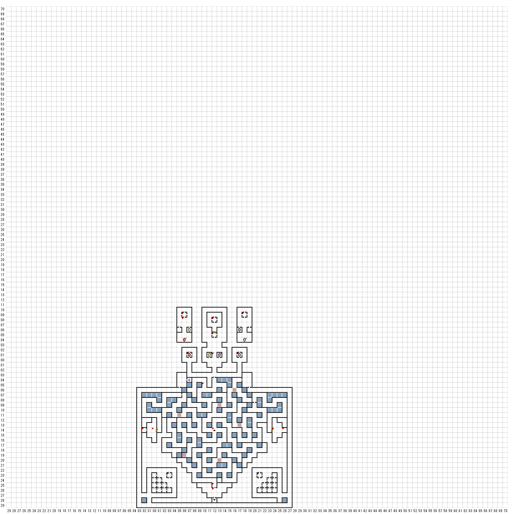

【 西：2，南：12 】
泡立ち、血の色を呈する泉の上から、グロテスクな
小さい彫像が、ほほ笑みかけている。
誰が潜る？
レベル１：ダメージを受けた
【 東：0，南：12 】
赤いカーテンがかかった壁のある部屋で
声がささやいた。
”肉体”
【 東：3，南：21 】
床から突き出しているのは、深い深い井戸の
口である。そしてその上には次のように
書かれている。
＊ MOSERの神秘の堀 ＊
＜責任は自分でおとりください＞
誰が潜る？
【 東：6，北：12 】
＊ 時の失われし部屋 ＊
【 東：6，北：11 】
扉にはこう書かれていた。
月の下には、LOONが住む。時の失われし
部屋にて答えは得られん。
（一度読むと出てこない？）
【 東：7，北：3 】
白いカーテンがかかった壁のある部屋は
静かな沈黙が支配していた。
B3FE6N4へ
【 東：10，南：3 】
ドンドン
STAMPINg
barter > buy
あなた達に必要なものを持っています。
strange item 6000
（RUBBER DUCK）
水たまりの中で見つけたんだ
【 東：12，北：6 】
＊ KAMA KAZI 寺院 ＊
大きな白い歯をむきだした、太った僧がよたよた歩いている。
（LORD HIENMITEY）
【 東：12，北：3 】
ガスの罠しかし宙に浮いている（？）
【 東：12，南：12 】
上へ上る縄バシゴ
【 東：12，南：23 】
青白く光る文字が、薄青色の
壁に浮かび上がった。
この最も深く青の壁の奥、暗い色の光あり。
コバルトの光のその奥に、命の光あり。
【 東：17，北：3 】
黒いカーテンがかかった壁のある部屋で
声がささやいた。
”死”
B3F E18N4へワープ
【 東：18，北：12 】
LIGHTNING BOLT
（一発でひとり灰になる）
【 東：21，南：21 】
ガスの罠だ！
だが宙に浮いている！
【 東：24，南：12 】
黄色いカーテンがかかった壁のある部屋で
声がささやいた。
”短命”
【 東：26，南：12 】
みずたまり
潜る
A：金を失う（持っていなければ何も起こらない）
B：呪文ポイントがよみがえった